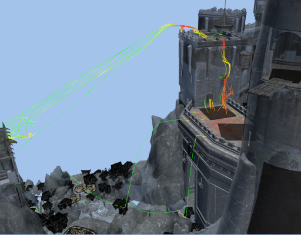
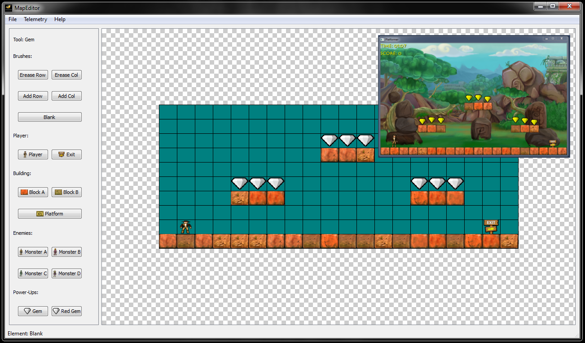

Moritz Wundke - Lead Programmer Tragnarion Studios
Una herramienta de desarollo es tan simple como un script que apaga un equipo a una determinada hora o tan complicado como un sistema de distribución automática ala Steam.
Las herramientas son para todos. Si alguien dice que no necesita una herramienta o que ya tiene todas las necesarias simplemente aún no ha descubierto donde fallan.
Las posibilidades son infinitas!
Cuando pensamos en crear una herramienta es importante no caer en la tentación de hacerlo todo de 0. ¿Existe ya una herramienta que encaje en mis requerimientos? ¿Es viable usarla? ¿El coste es menor que un desarrollo propio?
Si no encontramos ninguna herramienta que se ajuste a nuestras necesidades es probable que la tengamos que crear nosotros mismos.
La mayoría de las veces es muy difícil demostrar la vitalidad de una herramienta. Es posible que la herramienta tenga un único uso y se use una sóla vez pero que sea muy difícil realizar una tarea a mano.
Un ejemplo de una herramienta de un sólo uso fue la que desarrollamos para descubir que en un nivel teniamos recursos cargados sin que nos dimos cuenta. Sólo se ejecutó una vez pero se consigió resolver el problema que no parecia tener solución en un principio.
Ante cualquier desarrollo, por pequeño que sea, es importante darnos cuenta de que existe una serie de herramientas esenciales que nos hagan el día día más sencillo.
Gran parte de los proyectos, sobre todo de software, fracasan por una mala planificación y diseño. Es muy importante que uno se acostumbre a usar:
La regla de oro del desarrollo de software es: Lo que no esta versionado no existe
Aunque parezca una frase populista tiene mucho sentido. Trabajándo en equipo es importante que cada miembro sepa en lo que esta trabajando ya que entre ellos existen dependencias. Una persona que trabaja en local trabaja fuera del proyecto y representa un peligro:
La mayoria de sistemas de control de versiones se pueden catalogar en dos grupos
Si no sabemos lo que estamos haciendo seguramente no llegaremos a terminar lo que queremos. La mayoría de herramientas siguen filosofias tales como:
Otra herramienta sumamente importante es la que nos ayuda a saber lo que falla. Llegado un punto en el desarrollo es esencial que sepamos que está roto o que partes han de mejorarse para poder llegar a la calidad deseada. Hablar sobre FogBugz, Jira y Trac
Hablar sobre Hudson, Buildbot y Jenkins
Ambos son servicios que proporcionan repositorios public y privados. Incluyen muchas herramientas en su interfaz web.
GitHub.com
BitBucket.org
Como empezar una herramienta y qué hemos de tener encuenta!
En general suelen existir dos tipos de herramientas: directas, aquellas que afectan directamente al desarrollo del producto, e indirectas, aquellas que no están directamente ligadas al desarrollo del producto.
Las herramientas directas son las más evidentes. Un juego, por ejemplo, requiere de un editor de niveles. En cambio las herramientas indirectas son las que no se ven a simple vsita y suelen caer en el olvido.
Los datos que una herramienta trata son vitales. Son datos binarios o no? Los datos nos indican como poder comunicarnos con otras herramientas.
Al crear cualquier herramienta tenemos que tener en mente que pueda ser usado en infinidad de ámbitos. Si creamos las herramientas pensando desde el principio de que puedan ser usados por linea de comandos podremos integrarlas en otros systemas. Incluso pueden ser usados por otras herramientas.
La mayoria de las herramientas nacen de la necesidad de un individuo. En muchas ocasiones el individuo pide una determinada funcionalidad que en realidad no se ajusta a sus necesidades. Es importante realizar un análisis de conocimiento para poder descubir qué realmente requiere la persona que nos pide una herramienta.
Para poder realizar un análisis nos centraremos en tres tipos de conocimiento:
Vamos a ver una serie de ejemplos de herramientas reales y otras creadas expresamente para esta charla.
Crear scripts en archivos por lotes tipo .bat es una herramiente de mucha utilidad. A veces se olvida la facilidad que orecen por su poca complejidad.
Un script por lotes es ideal para mezclar diversas tareas o funcionalidad de otras herramientas y ofrece todo ese poder para usarios no técnicos.
Un ejemplo real te archivos por lotes es el sistema de empaquetado de Scourge: Outbreak. El juego es compatible con hasta 4 plataformas: PC, OSx, Xbox 360 y PS3.
El problema viene cuando cada plataforma conlleva distintas limitaciones los cuales el equipo entero ha de respetar. Lo cual nos define los siguientes requisitos para el sistema de empaquetado:
Para poder ejecutar distintas acciones dependiendo de la plataforma deseada podemos usar saltos condicionales.
@echo off
set Platform=PC
rem set Platform=MAC
rem set Platform=XBOX
goto:section_%Platform%
:section_PC
echo This is the PC Section
goto:end
:section_MAC
echo This is the MAC Section
goto:end
:section_XBOX
echo This is the XBOX Section
goto:end
:end
pauseSi usamos un argumento de linea de comandos como identificador de plataforma podremos ejecutar una serie de acciones distintas para cada una de ellas.
Otro truco útil cuando usamos scripts por lotes es la habilidad de definir funciones reusables.
@echo off
goto:end_functions
:myFunction
echo This is just a simple function
goto:eof
:end_functionsUna tarea común cuando procesamos datos por lotes es iterar sobre una lista. El siguiente ejemplo itera sobre todas las palabras separadas por espacios de un archivo de texto y ejecuta una función para cada una de ellas.
:processWord
REM Word list from file
set WordList=
FOR /F "eol= tokens=* delims= usebackq" %%i IN (%1) DO (
set WordList=%%i
)
FOR %%i IN (%WordList%) DO (
%2 %%i
)
GOTO:EOFAlgunas acciones como averiguar si una cadena de texto contiene otra cadena de texto pueden volverse sumamente complicados y hay que sopesar si es necesario crear la tarea usando scripts por lotes.
:containsString
setlocal
set $answer=N
if {%1} EQU {} goto endContainsString
if {%1} EQU {""} goto endContainsString
if {%2} EQU {} goto endContainsString
if {%2} EQU {""} goto endContainsString
set $string=####%1####
set $string=%$string:####"=%
set $string=%$string:"####=%
if "%$string%" EQU "" goto endContainsString
set $string=%$string:####=%
set $substring=####%2####
set $substring=%$substring:####"=%
set $substring=%$substring:"####=%
if "%$substring%" EQU "" goto endContainsString
set $substring=%$substring:####=%
for /f "Tokens=*" %%k in ('@echo %%$string:%$substring%^=%%') do @set $work$=%%k
if NOT "%$string%" EQU "%$work$%" set $answer=Y
:endContainsString
endlocal&set $answer=%$answer%
GOTO:EOFPython es un lenguaje de programación dinámico interpretae muy usado en el desarrollo de videojuegos. Se usa especialmente para crear herramientas.
Las ventajas de python para el desarrollo de herramientas son:
Pero ¿porqué es tan usado en videojuegos?
Básicamente porque es multiplataforma y favorece al desarrollo rápido debido a que si se necesita algo habrá un paquete de python qye lo haga. Y sino se crea. En Python tenemos al alcanze de un click:
Vamos aver un ejemplo real. Nos encontramos en el caso de tener que comparar dos rutas y buscar si en ambas hay archivos duplicados.
Decidimos de crear una herramienta por el simple hecho de que se podría automatizar el proceso de verificar que ambas rutas no contuviesen elementos duplicados y resultaba más sencillo que usar un programa de comparación.
def walk_dir(dir):
for f in os.listdir(dir):
fullpath = os.path.join(dir,f)
if os.path.isdir(fullpath) and not os.path.islink(fullpath):
for x in walk_dir(fullpath):
yield x
else:
yield fullpath
def compare_dirs(dir1, dir2):
for file1 in walk_dir(dir1):
file1_base = os.path.basename(file1).lower()
for file2 in walk_dir(dir2):
file2_base = os.path.basename(file2).lower()
if file1_base == file2_base:
print("Duplicated file found: %s\n - %s\n - %s"%(file1_base, file1, file2))Vamos a explicar las partes importantes del código.
Lo primero que vemos es que en vez de usar la palabra clave return usamos yield. La idea es que cuando llegamos a un yield devolvemos el valor pero la ejecución no termina, sino que la siguiente vez que ejecutemos la función seguimos desde el mismo sitio. Lo que hemos hecho es usar un generador y que se suele usar cuando se tiene una gran cantidad de datos potenciales que se van a leer una sola vez.
for x in walk_dir(fullpath):
yield xLas herramientas telemétricas son herramientas indirectas que se suelen olvidar.
Un heatmap es una imagen sobrepuesta encima de otra que representa un entorno. La imagen sobrepuesta contiene marcas de calor para poder visualizar distintos hechos.
La siguiente imagen representa un mapa de muertes del juego Transformers: War for Cybertron. En ella podemos observar en que puntos del mapa se han producido muertes.
Otro ejemplo del mismo juego es el mapa de 'kills'.
Si observamos atentamente veremos que casi no hay diferencias pero esas diferencias son de vital importancia para el diseñador de niveles ya que nos puede mostrar que el usario no esta jugando como esperabamos.
Combinando ambos mapas podemos crear un mapa balanceado (normalizado en nuestro caso).
No solo podemos capturar e analizar datos planos. Un ejemplo de datos geográficos es el sistema de telemetria para Assassin's Creed donde se analizan los movimientos e elecciones de los jugadores para representarlos después en el mundo 3D.

Un sistema simple de captura de datos consiste por lo general en:
Añadir un evento simple al sistema de telemetria:
{
"jsonrpc": "2.0",
"method": "addGameplayEvent",
"params": {
"type": 1,
"tag": "playername",
"loc": "location",
"data": {
"timestamp": 12569537329,
"content": "[The content goes here...]"
}
},
"id": 1
}Respuesta:
{"jsonrpc": "2.0", "result": [True|False], "id": 1}Añadir un conjunto de eventos al sistema de telemetria:
{
"jsonrpc": "2.0",
"method": "addBatchedGameplayEvent",
"params": {
"type": 1,
"tag": "playername",
"loc": "location",
"data":
[
{
"timestamp": 12569537329,
"content": "[The content goes here...]"
}
]
},
"id": 1
}Respuesta:
{"jsonrpc": "2.0", "result": [True|False], "id": 1}Devuelve un conjunto de eventos registrados:
{
"jsonrpc": "2.0",
"method": "getGameplayEvent",
"params":
{
"type": 1,
"tag": "playername"
},
"id": 1
}Respuesta:
{"jsonrpc": "2.0", "result": [{}], "id": 1}Creación de un editor de nivel sencillo pero versátil. Para este ejemplo tomaremos el juego Platformer de la biblioteca de XNA

Para poder empezar a crear el editor hemos de saber que funcionalidades debamos añadir:
El esqueleto del editor es accesible para que podáis usarlo.